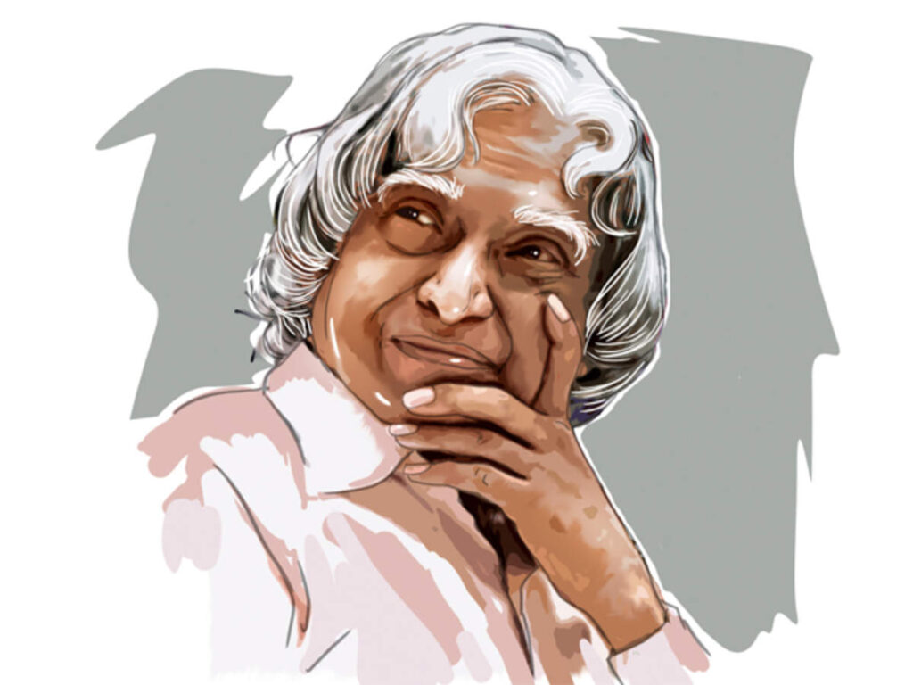

A. P. J. Abdul Kalam

11th President of India (July 25, 2002 – July 25, 2007)
Date of Birth: October 15, 1931
Place of Birth: Rameswaram, Ramnad District, Madras Presidency
Parents: Jainulabdeen (Father) and Ashiamma (Mother)
Spouse: Remained Unmarried
Education: St. Joseph’s College, Tiruchirappalli; Madras Institute
Profession: Professor, Author, Scientist
Died: July 27, 2015
Place of Death: Shillong, Meghalaya, India
Avul Pakir Jainulabdeen Abdul Kalam, better known as APJ Abdul Kalam, was an illustrious scientist
turned statesman who served as the 11th President of India from 2002 to 2007. Kalam spent more than
forty years as a science
administrator and scientist mainly at the Indian Space Research Organization (ISRO) and Defence Research
and the
Development Organization (DRDO). He was closely associated with the military missile development efforts
and
civilian space programme of India. For his work on launch vehicle technology and development of
ballistic missile, he
was given the pseudonym of ‘The Missile Man of India.’ In 1998, he played a prominent role in Pokhran-II
Nuclear
Tests.
In 2002, he was elected the 11th President of the country and became widely known as the ‘People’s President.’ After serving his presidential term he pursued what he loved most – teaching, writing and reading. For his achievements and contributions as a scientist, he was honoured with the ‘Bharat Ratan Award,’ India’s highest civilian honour.
He left for the heavenly abode on July 27, 2015, while delivering a lecture at the Indian Institute of Management (IIM) Shillong. He was laid to rest with full state-honours and his funeral was attended by thousands of people including national-level dignitaries. APJ Abdul Kalam was born into a poor Tamil Muslim family in the pilgrimage town of Rameswaram, Tamil Nadu, on October 15, 1931. His mother, Ashiamma, was a housewife and his father, Jainulabdeen, was an imam of a local mosque and a boat owner. He was the youngest in the family with four elder brothers and a sister.
Though, the family was not financially affluent yet all the children were raised in an atmosphere that was full of love and compassion. In order to add to the family’s income, Kalam had to sell newspapers during his early years.
He was an average student during his school, but possessed a strong desire to learn and was very hard working. He loved mathematics and spent hours studying the subject. He pursued his education from ‘Schwartz Higher Secondary School,’ and then graduated from ‘Saint Joseph’s College, Tiruchirappalli,’ in 1954. He wanted to become a fighter pilot but his dream could not be fulfilled as here were only eight positions available in the IAF and he secured the ninth place.
In 2002, Kalam was chosen the Presidential nominee by the ruling National Democratic Alliance (NDA), and he was elected the President. He became the 11th President of India on July 25, 2002 and served the position till July 25, 2007.
He also became the third President of India to have received ‘Bharat Ratna’ before assuming the office of the President.
Due to his style of working and interaction with common people, especially the youth, he was affectionately called ‘The People’s President.’ According to Dr. Kalam, the most arduous decision he had taken during his tenure was that of signing the ‘Office of Profit Bill.’
During his tenure as President, he faced criticism for his inaction in deciding the fate of mercy petitions that were submitted to him. Out of the 21 mercy petitions, he acted only on one mercy plea. In 2005, he recommended for President’s rule in Bihar, which also became a controversial decision.
In 2002, he was elected the 11th President of the country and became widely known as the ‘People’s President.’ After serving his presidential term he pursued what he loved most – teaching, writing and reading. For his achievements and contributions as a scientist, he was honoured with the ‘Bharat Ratan Award,’ India’s highest civilian honour.
He left for the heavenly abode on July 27, 2015, while delivering a lecture at the Indian Institute of Management (IIM) Shillong. He was laid to rest with full state-honours and his funeral was attended by thousands of people including national-level dignitaries. APJ Abdul Kalam was born into a poor Tamil Muslim family in the pilgrimage town of Rameswaram, Tamil Nadu, on October 15, 1931. His mother, Ashiamma, was a housewife and his father, Jainulabdeen, was an imam of a local mosque and a boat owner. He was the youngest in the family with four elder brothers and a sister.
Though, the family was not financially affluent yet all the children were raised in an atmosphere that was full of love and compassion. In order to add to the family’s income, Kalam had to sell newspapers during his early years.
He was an average student during his school, but possessed a strong desire to learn and was very hard working. He loved mathematics and spent hours studying the subject. He pursued his education from ‘Schwartz Higher Secondary School,’ and then graduated from ‘Saint Joseph’s College, Tiruchirappalli,’ in 1954. He wanted to become a fighter pilot but his dream could not be fulfilled as here were only eight positions available in the IAF and he secured the ninth place.
In 2002, Kalam was chosen the Presidential nominee by the ruling National Democratic Alliance (NDA), and he was elected the President. He became the 11th President of India on July 25, 2002 and served the position till July 25, 2007.
He also became the third President of India to have received ‘Bharat Ratna’ before assuming the office of the President.
Due to his style of working and interaction with common people, especially the youth, he was affectionately called ‘The People’s President.’ According to Dr. Kalam, the most arduous decision he had taken during his tenure was that of signing the ‘Office of Profit Bill.’
During his tenure as President, he faced criticism for his inaction in deciding the fate of mercy petitions that were submitted to him. Out of the 21 mercy petitions, he acted only on one mercy plea. In 2005, he recommended for President’s rule in Bihar, which also became a controversial decision.